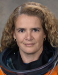

Lyndon B. Johnson Space Center
Houston, Texas 77058
|
National Aeronautics and Space Administration Lyndon B. Johnson Space Center Houston, Texas 77058 |
 |
Biographical Data |
||
Julie Payette
Astronaut, Canadian Space Agency
PERSONAL DATA: Born October 20, 1963, in Montréal, Quebec, Ms. Payette enjoys running, skiing, racquet sports and scuba diving. She has a commercial pilot license with float rating. Ms. Payette is fluent in French and English and can converse in Spanish, Italian, Russian and German. She plays the piano and has sung with the Montreal Symphony Orchestra, the Piacere Vocale in Basel, Switzerland, and the Tafelmusik Baroque Orchestra in Toronto.
EDUCATION: Attended primary and secondary school in Montréal, Quebec. International Baccalaureate from the United World College of the Atlantic in Wales, UK (1982). Bachelor of Electrical Engineering, cum laude, from McGill University, Montréal (1986). Master of Applied Science - Computer Engineering from the University of Toronto (1990).
ORGANIZATIONS: Member of l'Ordre des Ingénieurs du Québec and the International Academy of Astronautics. Member of the Board of Canada's "Own The Podium" Olympic High Performance Program. Director and Trustee of Lester B. Pearson UWV College in Victoria, BC, and member of the Board of Directors of Le Collége des Administrateurs of Laval University in Quebec City. Former Governor-in-Council for the Natural Sciences and Engineering Research Council of Canada (NSERC). Member of Les Amies d'affaires du Ritz.
SPECIAL HONORS: Received one of six Canadian scholarships to attend the Atlantic College in Wales, UK (1980). Greville-Smith Scholarship, the highest undergraduate award at McGill University (1982 to 1986). McGill University Faculty Scholar (1983 to 1986). NSERC Postgraduate Scholarship (1988 to 1990). Massey College Fellowship (1988 to 1990). Canadian Council of Professional Engineers; distinction for exceptional achievement by a young engineer (1994). NASA Space Flight Medal (1999). Chevalier de l'Ordre de la Pléiade de la francophonie (2001). Knight of l'Ordre National du Québec (2002). NASA Space Flight Medal (2009). University of Ottawa Distinguished Canadian Leadership Award (2009). Carried the Olympic flag in the opening ceremonies of the 2010 Olympic Winter Games in Vancouver, British Columbia. Engineers Canada Gold Medal, the highest recognition of the Canadian Council of Professional Engineers (2010). Inducted in the Canadian Aviation Hall of Fame (2010). NASA Exceptional Service Medal (2010). Officer of the Order of Canada (2010).
HONORARY DEGREES: Queen's University (1999); University of Ottawa (1999); Simon Fraser University (2000); Université Laval (2000); University of Regina (2001); Royal Roads University (2001); University of Toronto (2001); University of Victoria (2002); Nipissing University (2002); McGill University (2003); Mount Saint Vincent University (2004); McMaster University (2004); University of Lethbridge (2005); Mount Allison University (2005); University of Alberta (2006); York University (2010); University of Waterloo (2010); Concordia University (2010); University of British Columbia (2010); Niagara University USA (2011); Ryerson University (2011); Vancouver Island University (2012); Carleton University (2012).
EXPERIENCE: Before joining the space program, Ms. Payette conducted research in computer systems, natural language processing and automatic speech recognition. She worked as a system engineer with IBM Canada (1986 to 1988); research assistant at the University of Toronto (1988 to1990); visiting scientist at the IBM Research Laboratory in Zurich, Switzerland (1991), and research engineer with BNR/Nortel in Montréal (1992).
In June 1992, the Canadian Space Agency (CSA) selected Ms. Payette from 5,330 applicants to become one of four astronauts. After her basic training in Canada, she worked as a technical advisor for the Mobile Servicing System (MSS), an advanced robotics system contributed by Canada to the International Space Station.
In preparation for a space mission assignment, Ms. Payette obtained her commercial pilot license, studied Russian and logged 120 hours as a research operator onboard reduced gravity aircraft. In April 1996, Ms. Payette was certified as a one-atmosphere, deep-sea diving suit operator. Ms. Payette obtained her military pilot captaincy on the Tutor CT-114 "Snowbird" jet at the Canadian Air Force Base in Moose Jaw, Saskatchewan, in February 1996. She obtained her military instrument rating in 1997. She has logged more than 1,300 hours of flight time.
Ms. Payette was Chief Astronaut for the Canadian Space Agency (2000-2007).
In January 2011, Ms. Payette undertook a research fellowship as a Public Policy Scholar at the prestigious Woodrow Wilson Center for International Scholars in Washington, D.C. In October 2011, Ms. Payette accepted an appointment as Scientific Delegate to the United States for the Quebec Government. She is based in Washington, D.C., and remains a member of the Canadian astronaut corps.
NASA EXPERIENCE: Ms. Payette reported to NASA Johnson Space Center in Houston, Texas, in August 1996. She completed initial astronaut training in April 1998 and was assigned to work on technical issues in robotics for the Astronaut Office. A veteran of two spaceflights, STS-96 (1999) and STS-127 (2009), she has logged more than 611 hours in space.
From September 1999 to December 2002, Ms Payette was assigned to represent the astronaut corps at the European and Russian space agencies, where she supervised procedure development, equipment verification and space hardware processing for the International Space Station Program.
Ms. Payette also served as a Capsule Communicator (CAPCOM) at Mission Control Center in Houston and was lead CAPCOM for space shuttle mission STS-121. The CAPCOM is responsible for all communications between ground controllers and the astronauts in flight.
SPACE FLIGHT EXPERIENCE: Ms. Payette flew on space shuttle Discovery from May 27 to June 6, 1999, as a crew member of STS-96. During the mission, the crew members performed the first manual docking of the shuttle to the International Space Station and delivered four tons of supplies to the station. Ms. Payette served as a Mission Specialist, was responsible for the station systems, supervised the spacewalk and operated the Canadarm robotic arm. The STS-96 mission was accomplished in 153 orbits of the Earth, traveling more than six million kilometers in nine days, 19 hours and 13 minutes. Ms. Payette was the first Canadian to participate in an ISS assembly mission and to board the station.
From July 15 to July 31, 2009, Ms. Payette served as the Flight Engineer on the crew of STS-127 aboard space shuttle Endeavour on the 29th shuttle mission to the International Space Station. During this mission, also known as station assembly mission 2J/A, the crew completed the construction of the Kibo Japanese Experiment Module, installed scientific experiments on its exposed facility and delivered critical spare parts and replacement batteries to the orbital complex. Robotics technology was used almost every day on this assembly mission, and Ms. Payette operated all three robotic arms: the shuttle's Canadarm, the station's Canadarm2 and a special-purpose Japanese arm on Kibo. While the shuttle was docked to the ISS, the mission featured a record 13 astronauts from 5 different nationalities together onboard a single joint spacecraft. It also highlighted the first time that two Canadians were in space at the same time. The 16-day mission included five spacewalks and traveled 10.5 million kilometers in 248 orbits around the Earth.
JUNE 2012
This is the only version available from NASA. Updates must be sought from the above named individual.